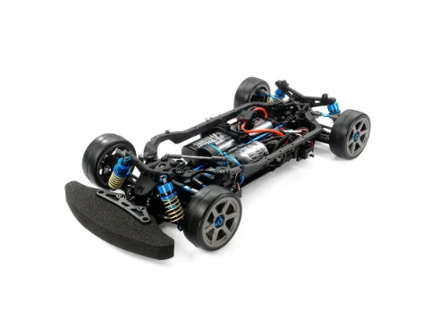
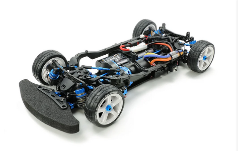

タミヤ TB-05 PRO シャーシキット

画像引用元：タミヤ公式サイト
基本情報
| 機種名 | タミヤ TB-05 PRO シャーシキット |
|---|---|
| 品番 | 58658 |
| 発売日 | 2018年6月23日 |
| 価格 | 32,780円（税込）/ 本体価格29,800円 |
| 対象レベル | 中級者〜上級者 |
| スケール | 1/10 |
| 生産状況 | 生産終了 |
シャーシスペック
| シャーシタイプ | シャフトドライブ4WD ツーリングカー |
|---|---|
| シャーシ長 | 368mm（ボディ等含まず） |
| 全幅 | 187mm |
| ホイールベース | 257mm |
| フレーム | ロワデッキとサイドフレームを一体成形した樹脂製モノコックタイプ |
駆動系
| 駆動方式 | 縦置きモーター・シャフトドライブ4WD |
|---|---|
| モーター位置 | フロントまたはリヤの2箇所から選択可能 |
| デフギヤ | 前後ともオイル封入式ギヤデフ |
| ドライブシャフト | 前後アルミプロペラシャフト、前後ユニバーサルシャフト |
| ベアリング | フルベアリング仕様 |
サスペンション
| タイプ | 4輪ダブルウィッシュボーン |
|---|---|
| ダンパー | TRFスペシャルダンパー |
| ステアリング | 3分割タイロッド式（バルクヘッドマウント） |
| サスペンションタイプ | TRF418タイプサスペンション |
主な特徴
- シンメトリー構成：ロワデッキとサイドフレームを一体成形したメインシャーシは、シンメトリーデザインを追求して左右のハンドリングバランスを最適化
- 2つのモーターレイアウト：走行安定性を重視したフロントモーター、加速性を重視したリヤモーターの2タイプから選択可能
- TRFスペシャルダンパー：定評のあるTRFダンパーを標準装備
- 豊富なセッティング幅：コースレイアウトや路面状況に合わせて幅広く対応
- レース志向：タミヤグランプリやタミヤチャレンジカップなどのRCレースに最適
TB-05R シャーシキット（上位モデル）

画像引用元：タミヤ公式サイト
TB-05Rの特徴
| 品番 | 47456 |
|---|---|
| 発売日 | 2025年3月29日（土）ごろ発売予定 |
| 価格 | 63,580円（税込）/ 本体価格57,800円 |
| コンセプト | タミヤチャレンジカップに最適なレース仕様 |
TB-05 PROからの主な進化点
- フロントモーター専用設計：フロントモーターに特化し、専用のカーボン強化シャーシとモーターマウントを採用
- 専用カーボン強化シャーシ：剛性を大幅に向上
- TRFスーパーショートビッグボアダンパープラス：TRF420譲りのアジャスタブルサスペンション
- 重量バランスの最適化：モーター搭載位置を3mm後退させて重量バランスを適正化
- レース用オプションパーツ標準装備：以下のパーツを追加装備
- ダブルカルダン用ドライブシャフト（39サイズ×2）
- アッセンブリーユニバーサル用39mm軽量リヤスイングシャフト
- クランプ式アルミホイールハブ（4mm厚）
- 46mmチタンコートサスシャフト
- カーボン強化ギヤケース
注記：TB-05Rは初回発売（2021年3月）から再販予定です。タミヤチャレンジカップなどのレース参加を考えている方に最適な仕様となっています。
ぽすとそに工房での修理実績
修理難易度
★★★☆☆ （中級）
メンテナンスのポイント
- ギヤデフのメンテナンス：オイル封入式ギヤデフは定期的なオイル交換が必要です。漏れがないか常にチェックしましょう
- モーター位置の選択：初心者の方にはフロントモーター配置をおすすめします。安定性が高く扱いやすいです
- TRFダンパーの調整：減衰力の調整でハンドリング特性が大きく変わります。少しずつ調整して自分の好みを見つけましょう
よくある故障と対処法
- ギヤデフからのオイル漏れ：Oリングの交換とグリスアップで対処。定期的なメンテナンスが重要
- プロペラシャフトの異音：ユニバーサルジョイント部分のグリス切れが原因。グリスアップで解決
- ダンパーオイル漏れ：Oリングの劣化が原因。早めの交換を推奨
初心者へのアドバイス
TB-05 PROは中級者以上向けのシャーシですが、基本的な構造は理解しやすく設計されています。TT-02からのステップアップに最適です。最初はフロントモーター配置で慣れることをおすすめします。
18年の経験から
TB-05シリーズは、シャフトドライブ4WDの中でも特にバランスが良いシャーシです。レース志向でありながら、メンテナンス性も良好。ただし、ギヤデフのメンテナンスを怠ると性能低下が顕著に現れます。定期的なオイル交換を忘れずに。